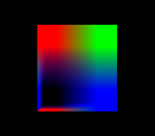

X-visual App Architecture¶
Note
Following x-visual examples readme to start up.
x-visual is a pure javascript ECS WebGl rendering application framework. ECS stands for Entity, Component, System. Application should following this concept to use x-visual effectiently.
1. x-visual startup¶
x-visual is a npm package, together with a bundle can be used in plain javascript. For quick start, see x-visual/examples readme.
2. Hello XWorld¶
Here is as simple application using x-visual for data representation.
1 2 3 4 5 6 7 8 9 10 11 12 13 14 15 16 17 18 19 20 21 22 23 | /** Example: Hello XWorld
*/
import * as xv from 'x-visual'
import Cube from './hellocube'
/** Hollow XWorld Application.
* add the user implemented system, Cube, into xworld, then show it.
* @class
*/
class App {
constructor(canv) {
var c = document.getElementById(canv);
const xworld = new xv.XWorld(c, window, {
camera: {far: 10000} // default 5000
});
var ecs = xworld.xecs;
xworld.addSystem('hello', // any group name as you like
new Cube(ecs, {xscene: xworld.xscene}));
xworld.startUpdate();
}
}
|
In the main program, the 3D world, xworld, is used as the 3D space manager. Afther create the xworld, a cube also been created, which representing some user data been visualized. After this, call xworld.startUpdate() and render the scene repeatedly.
1 2 3 4 5 6 7 8 9 10 11 12 13 14 15 16 17 18 19 20 21 22 23 24 25 26 27 28 29 30 31 32 33 34 35 36 37 38 39 40 41 42 43 44 45 | import * as xv from 'x-visual'
import * as THREE from 'three'
/**
* Subclass for rendering data objects
* @class
*/
export default class Cube extends xv.XSys {
constructor(ecs, options) {
super(ecs);
this.ecs = ecs;
this.logcnt = 0;
// create a cube with options
if (ecs) {
var cube = ecs.createEntity({
id: 'cube0',
Obj3: { geom: xv.XComponent.Obj3Type.BOX,
box: [200, 120, 80] }, // geometry parameters, for BOX, it's bounding box
Visual: {vtype: xv.AssetType.mesh,
asset: '../../assets/rgb2x2.png' }
});
}
}
update(tick, entities) {
if (this.logcnt < 2) {
this.logcnt += 1;
console.log('cube.update(): ', tick, entities)
}
for (const e of entities) {
if (e.flag > 0) {
// handling command like start an animation here
this.cmd = x.xview.cmds[0].cmd;
}
else this.cmd = undefined;
}
}
}
Cube.query = {
iffall: ['Visual']
};
|
A cube entity has been defined above, with id, Obj3, Visual components.
About System¶
- ECS.System & ECS.XSys
ECS.System is a base class of all x-visual built-in systems, like renderer, x-view and tween animation driver.
ECS.XSys is a base class for users to extend. It’s nothing now but a coding convention. Application systems should extends this class in case some common helping functions added to this system in the future.
- query & update
In the Hello XWorld example, there is a line of code reflecting key concept of ECS, the query condition:
Cube.query = {
iffall: ['Visual', 'CmdFlag']
};
The iffall is a condition specifying that all entities with all 2 components, Visual and CmdFlag must been handled by Cube system.
The update() function is where a system handling entities at each rendering loop. The argument entities is passed to it according to the query logics.
Examples¶
X-visual examples is a part of source repository, but also a separate webpack project.
All examples are using Webpack for transpiling. To run examples, download the source, then install dependencies and transpile.
npm i
webpack
If everything goes well, open the examples/cube/index.html, linked page of the first example will show a cube.
{kind=link}
3. Common Practice of Application¶
An x-visual application includes:
App Main
Main function is a common pattern of application includes creating XWorld, Entities then start rendering by calling xworld.startUpdate().
Entities
Entities are groups of Components. In x-visaul, these components are a group of data and System actions scripts.
Systems
Systems update components’ state, changing how data been rendered. A user system can change object’s position, moving path or color etc.
4. Framework Functions & API¶
Basically x-visual is not intended to be a well round data visualization framework. It’s only used to verifying some idea required by a commercial system and as a personal arsenal for consolidating any creative thoughts.
It would been eventually useful if it could trigger any further innovation, when math met arts.
So currently there is no more documents about it’s function details, just feel free to try it.
5. Next Step¶
There are some html test cases can be useful, see x-visual/test/html.
Details is up coming…